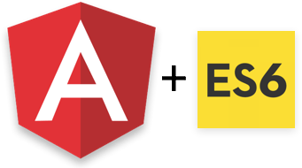
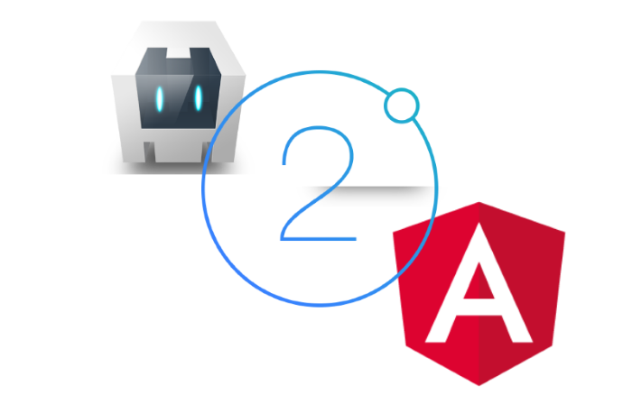
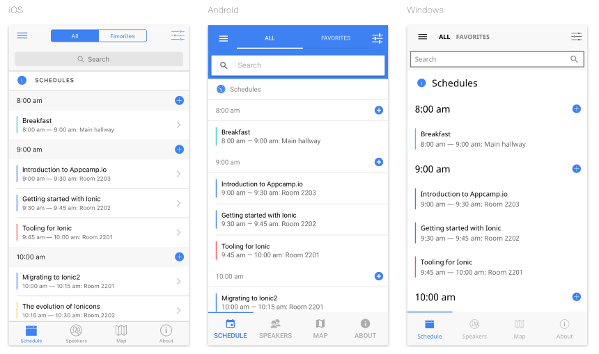
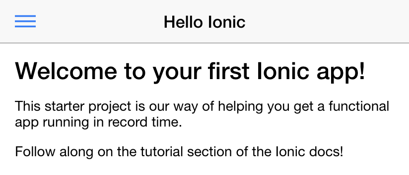
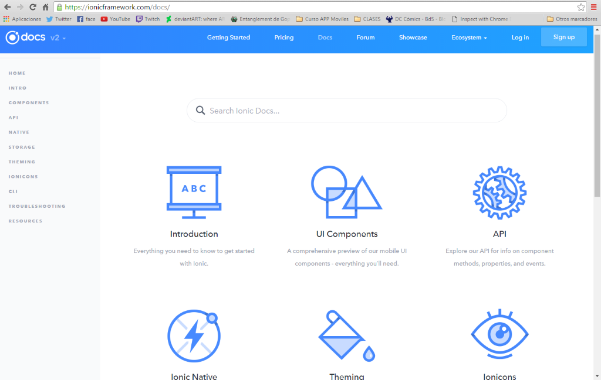
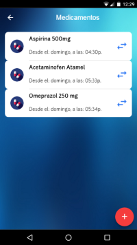
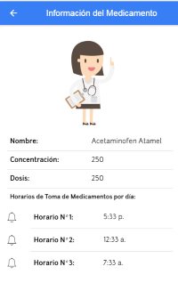
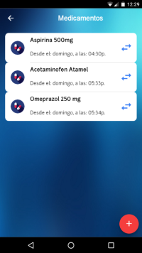
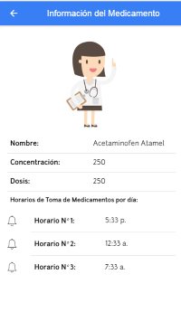

Ionic 2 framework
Contenido
- ¿Que es Ionic?
- ¿De donde proviene IONIC 2?
- Objetivos
- Estadisticas
- Mi Experiencia con Ionic 2 Framework
¿Que es Ionic?
Es un framework que facilita el desarrollo de aplicaciones móviles

¿AplicaciÓn Móvil Híbrida?
- .apk .iap .zap
- WebView Component
¿De donde Proviene IONIC 2?
| Native SDK | Cordova/Phonegap |
|---|---|
| Botones | Webview |
| Scrolling | |
| Navegacion | |
| Gestos | |
| Camara... |
Ionic V1
Desarrollado sobre AngularJS
- Componentes UI
- Directivas y Servicios
- Aceleración de Hardware Nativo
Los tiempos cambian y todo evoluciona.

Ionic 2 es el mismo framework, pero mas poderoso, robusto y diseñado para el futuro.

Metas de la v2
- Simplicidad
- UX Nativa
- Navegación
- Crea lo que tu quieras
- Una sola base de codigo

Interfaces personalizables
Pensado en el futuro
Estadisticas
- 105 Meetup Groups alrededor del mundo
- Mas de 1.2 millones de aplicaciones
- IBM app.
Aplicaciones desarrolladas
!Tu primera app hibrida!
Documentación
www.ionicframework.com/docs/ Mi experiencia con IONIC 2 Framework
Curva de aprendizaje
 


